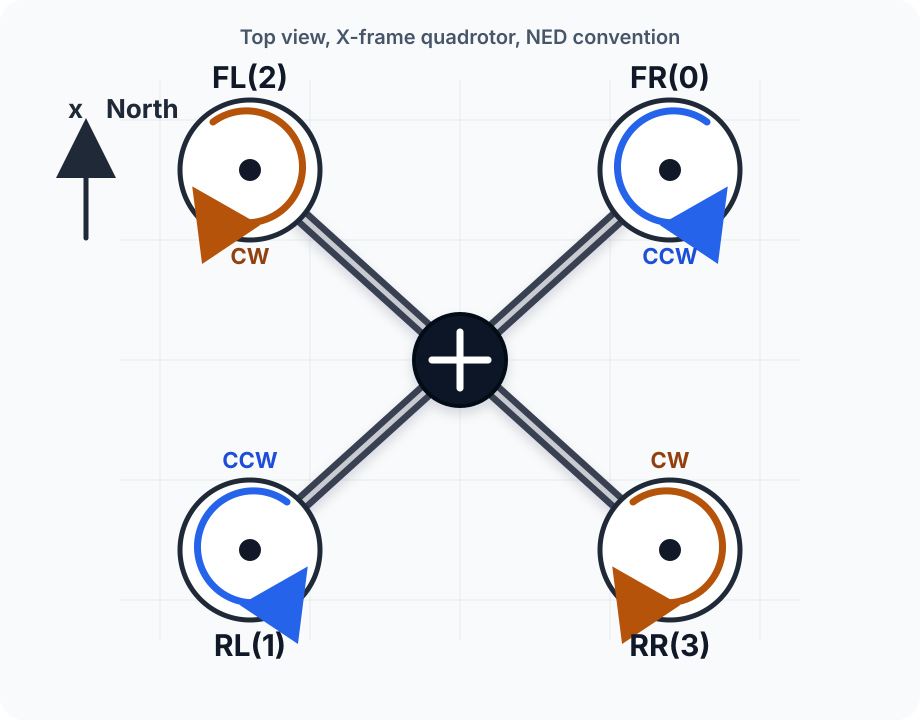

Control Allocation: Wrench to Motor Throttles
Control allocation is the mapping from a desired wrench \([\tau_x,\, \tau_y,\, \tau_z,\, T]^\top\) to individual motor throttles \(\delta_i \in [0, 1]\). For an X-frame quadrotor it is a \(4 \times 4\) linear map followed by a square-root and an affine throttle scaling.
The implementation lives in motor_allocator.hpp inside uav_control.
Motor layout (x500 SITL, top view, NED)

Motor indices 0–3 map directly to ActuatorMotors.control[0..3]. Slots 4–11 must be NaN for a 4-motor vehicle.
Forward model
Each motor \(i\) spinning at \(\omega_i\) [rad/s] produces a thrust \(f_i = k_T \omega_i^2\) and a reaction torque \(m_i = k_m \omega_i^2\) where \(k_m = k_{M,\text{ratio}} \cdot k_T\).
The wrench assembled on the body is:
\[ \begin{pmatrix} \tau_x \\ \tau_y \\ \tau_z \\ T \end{pmatrix} = \mathbf{A}\,\boldsymbol{\omega}^2, \qquad \mathbf{A} = \mathrm{diag}(k_T L,\; k_T L,\; k_m,\; k_T)\; \mathbf{B} \]
where \(L\) is the arm length and \(\mathbf{B}\) encodes the geometry and spin directions:
\[ \mathbf{B} = \begin{pmatrix} -k_s & k_s & k_s & -k_s \\ k_s & -k_s & k_s & -k_s \\ 1 & 1 & -1 & -1 \\ 1 & 1 & 1 & 1 \end{pmatrix}, \qquad k_s = \sin 45^\circ = \frac{\sqrt{2}}{2} \]
Column order: FR(0), RL(1), FL(2), RR(3).
Row-by-row interpretation
| Row | Wrench | Sign pattern | Reason |
|---|---|---|---|
| 1 | \(\tau_x\) (roll) | FR,RR negative; RL,FL positive | Right motors are on the \(+y\) side; spinning them faster rolls right (negative roll) |
| 2 | \(\tau_y\) (pitch) | RL,RR negative; FR,FL positive | Front motors are on the \(+x\) side |
| 3 | \(\tau_z\) (yaw) | FR,RL positive; FL,RR negative | CCW motors produce positive reaction torque on body |
| 4 | \(T\) (thrust) | all positive | All motors contribute thrust |
Inverse: wrench -> throttles
The allocation inversion uses the Moore-Penrose pseudoinverse:
\[ \boldsymbol{\omega}^2 = \mathbf{A}^+ \begin{pmatrix} \tau_x \\ \tau_y \\ \tau_z \\ T \end{pmatrix} \]
Since \(\mathbf{A}\) is square and full rank for a standard quadrotor, \(\mathbf{A}^+ = \mathbf{A}^{-1}\).
Rotor speeds are then converted to throttles via:
\[ \omega_i = \sqrt{\max(0,\; \omega_i^2)}, \qquad \delta_i = \mathrm{clip}\!\left(\frac{\omega_i - \omega_\min}{\omega_\max - \omega_\min},\; 0,\; 1\right) \]
The \(\max(0,\cdot)\) before the square root prevents NaN from small negative values due to numerical noise.
C++ implementation
/* motor_allocator.hpp */
struct MotorAllocatorConfig {
double arm_length = 0.25; // m
double k_T = 8.54858e-6; // N/(rad/s)^2
double k_M_ratio = 0.019; // k_m = k_M_ratio * k_T
double omega_max = 1047.2; // rad/s
double omega_min = 150.0; // rad/s
};
class MotorAllocator {
public:
void initialize(const MotorAllocatorConfig& cfg) {
cfg_ = cfg;
build_inverse();
}
std::array<float, 12> allocate(double T, const Eigen::Vector3d& tau) const {
Eigen::Vector4d wrench(tau(0), tau(1), tau(2), T);
Eigen::Vector4d omega_sq = inv_ * wrench;
std::array<float, 12> result;
double range = cfg_.omega_max - cfg_.omega_min;
for (int i = 0; i < 4; ++i) {
double w = std::sqrt(std::max(0.0, omega_sq(i)));
result[i] = static_cast<float>(std::clamp(
(w - cfg_.omega_min) / range, 0.0, 1.0));
}
for (int i = 4; i < 12; ++i)
result[i] = std::nanf("1"); // unused slots must be NaN
return result;
}
private:
void build_inverse() {
const double kS = std::sin(M_PI / 4.0);
double kt = cfg_.k_T, km = cfg_.k_M_ratio * kt, L = cfg_.arm_length;
Eigen::Matrix4d B;
B << -kS, kS, kS, -kS,
kS, -kS, kS, -kS,
1, 1, -1, -1,
1, 1, 1, 1;
Eigen::Vector4d k(kt * L, kt * L, km, kt);
Eigen::Matrix4d A = k.asDiagonal() * B;
inv_ = A.completeOrthogonalDecomposition().pseudoInverse();
}
MotorAllocatorConfig cfg_;
Eigen::Matrix4d inv_;
};The matrix is built once at initialization; allocate is called at 100 Hz in the control loop.
Publishing to PX4
auto msg = std::make_unique<px4_msgs::msg::ActuatorMotors>();
msg->timestamp = px4_timestamp_us;
msg->timestamp_sample = px4_timestamp_us;
msg->reversible_flags = 0;
for (int i = 0; i < 12; ++i)
msg->control[i] = motors[i];
motor_pub_->publish(std::move(msg));PX4 requires a continuous ActuatorMotors stream from the moment offboard mode is entered. If the stream stops, PX4 exits offboard mode. Publish zeros while waiting for all sensor inputs to be ready — do not skip the publish call.
Parameters (x500 defaults)
| Parameter | Value | Description |
|---|---|---|
arm_length |
0.25 m | Centre-to-motor distance |
k_T |
8.54858e-6 N/(rad/s)^2 | Thrust coefficient |
k_M_ratio |
0.019 | Moment-to-thrust ratio |
omega_max |
1047.2 rad/s | Max rotor speed (~10 000 RPM) |
omega_min |
150.0 rad/s | Min rotor speed (idle) |
omega_max and omega_min correspond to SIM_GZ_EC_MAX and SIM_GZ_EC_MIN in PX4’s SITL parameters.
Python reference (mixing matrix test)
The scripts/test_mixing.py script replicates the C++ logic exactly and runs eight checks: hover equilibrium, roll/pitch/yaw torques, saturation clamp, roundtrip wrench reconstruction, and a diagnostic for observed motor patterns.
python3 scripts/test_mixing.py